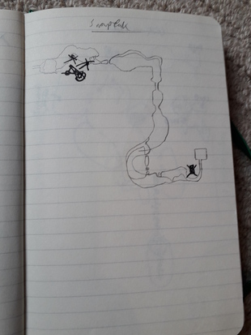

<h1>Maps are good. Here are some shitty maps of most of Zelda: Twilight Princess I used to try and 100% it</h1>
<h1>Areas</h1>
<a href="./Ordon Village_Fullsize.jpg"></a>
<a href="./Faron Woods_Fullsize.jpg"></a>
<a href="./Hyrule Field_Fullsize.jpg"></a>
<a href="./Kakariko Village_Fullsize.jpg"></a>
<a href="./Death Mountain_Fullsize.jpg"></a>
<a href="./Zoras Domain_Fullsize.jpg"></a>
<a href="./Snowpeak_Fullsize.jpg"></a>
<a href="./Gerudo Desert_Fullsize.jpg"></a>
<h1>Temples....but the Compass made creating my own maps pointless sooo.....</h1>
<a href="./Goron Mines_Fullsize.jpg"></a>
<a href="./Arbiters Grounds_Fullsize.jpg"></a>
<a href="./Temple Of Time_Fullsize.jpg"></a>
